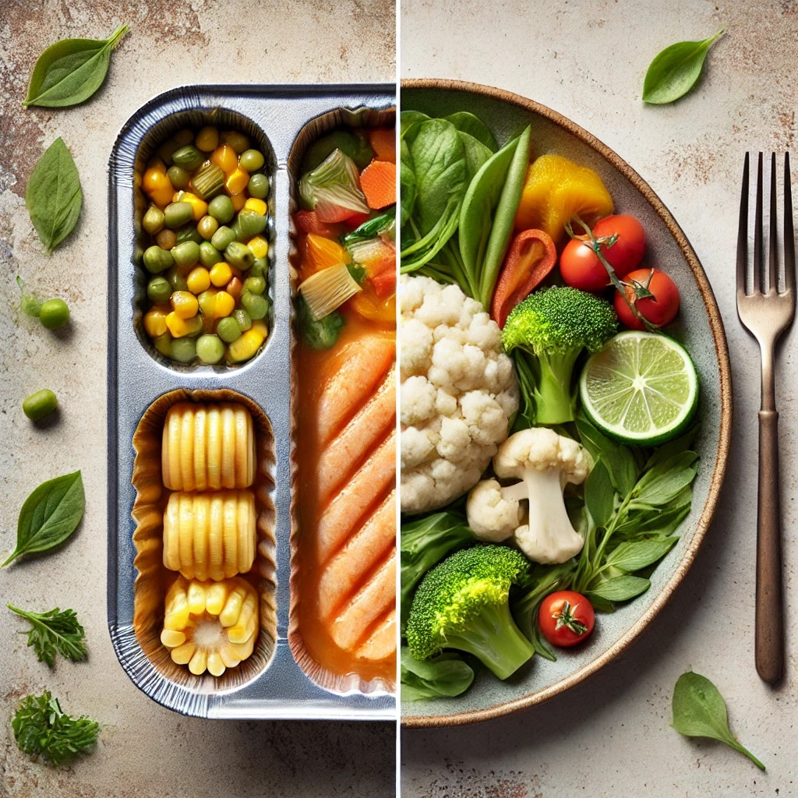

Vergleich: Fertiggerichte vs. selber kochen
1. Zeit
Fertiggerichte: Die Zubereitung ist schnell und unkompliziert. In der Regel muss man das Gericht nur erhitzen oder aufbacken. Bei Gerichten für die Mikrowelle geschieht dies meistens direkt in der Verpackung. So spart man zusätzlich die Zeit fürs Reinigen der Töpfe oder Pfannen.
Selber kochen: Selber zu kochen kann zeitaufwendig sein, insbesondere wenn man viele frische Zutaten verwendet und aufwendige Rezepte ausprobiert. Es kann jedoch auch Spaß machen.
2. Preis
Fertiggerichte: Diese können auf den ersten Blick günstiger erscheinen. Insbesondere wenn man Angebote nutzt. Sie können jedoch bis zu 200 % teurer sein.
Selber kochen: Fast immer ist zu Hause kochen deutlich günstiger, da man die Kontrolle über die Zutaten und Portionsgröße hat.
3. Inhaltsstoffe
Fertiggerichte: Oft enthalten Fertiggerichte ungesunde Zusatzstoffe, die das Gericht haltbarer, geschmackvoller und optisch ansprechender machen. Meistens ist auch eine große Menge an Salz, Zucker und ungesunden Fetten enthalten.
Selber kochen: Selber gekochtes Essen ist in der Regel gesünder, da frische Zutaten ohne Zusatzstoffe verwendet werden können. Man hat die Kontrolle über die Menge an Zucker, Salz oder Fett hat. Die Lebensmittel werden nicht stark verarbeitet und verlieren somit weniger Ballaststoffe und Vitamine.
4. Kalorien und Sättigung
Fertiggerichte: Fertiggerichte
verlieren bei der Produktion Ballaststoffe, was dazu führt, dass Fertiggerichte nicht lange satt halten. Oft sind in Fertiggerichten jedoch mehr Kalorien enthalten.
Selber kochen: Selber gekochtes Essen verliert beim Kochen weniger Ballaststoffe, da es schonender zubereitet wird und somit länger satt hält. Außerdem enthält es weniger Kalorien.
5. Nachhaltigkeit
Fertiggerichte: Oftmals werden Fertiggerichte in Plastikverpackungen verkauft, die zum Teil nicht recycelt werden können. Zudem kann die industrielle Produktion und der Transport einen großen CO2 - Fußabdruck hinterlassen.
Selber kochen: Beim selber Kochen hat man die Kontrolle über die Zutaten und darüber regionale Produkte zu kaufen, die durch gesparte Transportwege umweltfreundlicher sind.
Unsere Empfehlung:
Trotz der vielen Vorteile beim Selberkochen, sind Fertiggerichte deutlich einfacher und schneller in der Zubereitung. Dennoch empfehlen wir selber zu kochen. Sollte dies jedoch zeitlich nicht möglich sein, gibt es die Option, Gerichte vorzukochen und im Kühlschrank zu lagern. Außerdem kann man sich mit Freunden verabreden, um zusammen zu kochen. Es ist jedoch auch in Ordnung, ab und zu Fertiggerichte zu essen. Man sollte dann jedoch nach einem der gesünderen Fertiggerichte suchen.